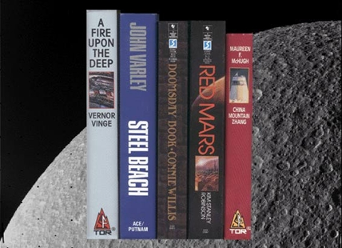

Contents of the 1993 Hugo/Nebula Award Anthology
We also have details on all the files and sizes available.
Hugo-nominated novels
- China Mountain Zhang by Maureen McHugh
- Doomsday Book by Connie Willis (HUGO AND NEBULA WINNER)
- A Fire Upon the Deep by Vernor Vinge (HUGO WINNER) Special Annotated Version Available!
- Red Mars by Kim Stanley Robinson (1994 NEBULA NOVEL WINNER)
- Steel Beach by John Varley
Hugo-nominated novellas
- "Uh-Oh City" by Jonathan Carroll
- "The Territory" by Bradley Denton
- "Protection" by Maureen McHugh
- Stopping at Slowyear by Frederik Pohl
- "Barnacle Bill the Spacer" by Lucius Shepard (HUGO WINNER)
Hugo-nominated novelettes
- "True Faces" by Pat Cadigan
- "The Nutcracker Coup" by Janet Kagan (HUGO WINNER)
- "In the Stone House" by Barry N. Malzberg
- "Danny Goes to Mars" by Pamela Sargent
- "Suppose They Gave a Peace..." by Susan Shwartz
Hugo-nominated short stories
- "The Winterberry" by Nicholas A. DiChario
- "The Mountain to Mohammed" by Nancy Kress
- "The Lotus and the Spear" by Mike Resnick
- "The Arbitrary Placement of Walls" by Martha Soukup
- "Even the Queen" by Connie Willis (HUGO AND NEBULA WINNER)
Hugo-nominated non-fiction book
- Let's Hear It For The Deaf Man by Dave Langford
Portfolios from the following Hugo-nominated professional artists
- Thomas Canty
- Bob Eggleton
- James Gurney
- Don Maitz (photo of him with paintings) (HUGO WINNER)
- David Cherry (New in version 1.2)
Scans of the following Hugo-nominated professional artworks
- Cover of Aristoi (W.J.Williams) by Jim Burns (Plus some special unpublished paintings by Mr. Burns)
- Dinotopia by James Gurney (Selected plates only)(HUGO WINNER)
- Cover of F&SF, Oct-Nov92 by Ron Walotsky
- Cover of Illusion (P. Volsky) by Michael Whelan
- Cover of Asimov's, Nov92 (Asimov portrait) by Michael Whelan
Hugo-nominated Semi-Prozines
Some samples are included from The New York Review of Science Fiction edited by David G. Hartwell, Donald G. Keller, Robert K.J. Kilheffer, and Gordon Van GelderHugo-nominated Fanzines
Some limited samples of text and layout from the following fanzines are found on the CD-ROM only.- File 770 edited by Mike Glyer
- Lan's Lantern edited by George J. Laskowski, Jr.
- Mimosa edited by Dick and Nicki Lynch (HUGO WINNER)
- Stet edited by Leah Smith
Samples of Fan Writing from the following Hugo nominees
- Mike Glyer
- Andy Hooper
- Dave Langford (HUGO WINNER)
- Evelyn C. Leeper
- Harry Warner, Jr.
Portfolios from the following Hugo-nominated fan artists
- Teddy Harvia
- Merle Insinga
- Linda Michaels
- Peggy Ranson (HUGO WINNER)
- Diana Harlan Stein
- Stu Shiffman
Campbell Award Nominees
Writing samples from the following nominees for the John W. Campbell Award (for best new writer first published in 91-92).- Barbara Delaplace
- Nicholas A. DiChario
- Holly Lisle (novel excerpt only)
- Laura Resnick (CAMPBELL WINNER)
- Carrie Richerson
- Michelle Sagara
The following Nebula-nominated Novels
(We're cheating here; these are all Hugo nominees)- Doomsday Book by Connie Willis (NEBULA AND HUGO WINNER)
- A Fire Upon the Deep by Vernor Vinge (HUGO WINNER)
- Red Mars by Kim Stanley Robinson (1994 NEBULA WINNER)
Nebula-nominated Novellas
- "Silver or Gold" by Emma Bull
- "The Territory" by Bradley Denton
- "Protection" by Maureen McHugh
- City of Truth by James Morrow (WINNER) (See note)
- "Contact" by Jerry Oltion and Lee Goodloe
- "Barnacle Bill the Spacer" by Lucius Shepard (HUGO WINNER)
- Griffin's Egg by Michael Swanwick (See note)
Nebula-nominated novelettes
- "Matter's End" by Gregory Benford
- "The July Ward" by S.N. Dyer
- "The Honeycrafters" by Carolyn Gilman
- "Danny Goes to Mars" by Pamela Sargent (WINNER)
- "Suppose They Gave a Peace" by Susan Schwartz
- "Prayers on the Wind" by Walter Jon Williams
Nebula-nominated short stories
- "Life Regarded as a Jigsaw Puzzle of Highly Lustrous Cats" by Michael Bishop
- "Lennon Spex" by Paul DiFilippo
- "The Mountain to Mohammed" by Nancy Kress
- "Vinland the Dream" by Kim Stanley Robinson
- "The Arbitrary Placement of Walls" by Martha Soukup
- "Even the Queen" by Connie Willis (HUGO AND NEBULA WINNER)
Annotated A Fire Upon the Deep
This novel was already famous on the computer nets for the "galactic Usenet" that plays an important part. Now the novel truly enters the computer age with thousands of lines of author's notes that show the development of the book through hypertext links on almost every page. See ideas, comments, fixes, proofreader's notes and more -- learn in intimate detail how a novel of this scope is written.This novel tied to win the 1993 Hugo Award.
Bonus Material
- The TeleJokeBooks, volumes 1 through 4. These are the best of the first 4 years of rec.humor.funny, the world's most popular electronic conference, devoted to comedy. Over 2000 jokes chosen for the computer user, many of them relating to computers and science. Indexed and searchable. It also includes jokes from January 1992 to June 1993.
- ConFrancisco Information
- MagiCon Information
- Hugo Ballot
- Hugo and Nebula winners' lists to present date
- WSFS information and constitution
- Episode guides for most major SF TV shows
- Bibliographies for various themes in SF
- Lists of music relating to SF
- Upcoming cons
- The archives from the start to 1989 of the "SF-Lover's Digest" -- the Hugo winning, ground-breaking electronic forum for the discussion of SF.
- More -- more -- more
Multimedia
- Graphics and illustrations
- Author photos
- Author bios, blurbs and bibliographies
- Video clips of a few authors introducing stories
- Video introduction by the editor
- Audio recordings of some authors reading their work
- Audio pronunciation guide for at least one work.
Hugo and WorldCon are registered service marks of the World Science Fiction Society. ConFrancisco is a service mark of San Francisco Science Fiction Conventions Inc. This project is not affiliated with either entity. The Nebula awards are presented by the Science Fiction and Fantasy Writers of America (SFWA).